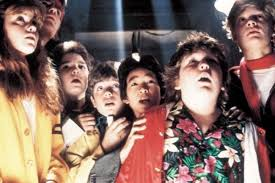

Protagonistas
- Sean Astin: es un actor, director y productor estadounidense, nominado al Óscar por su cortometraje Kangaroo Court, y mundialmente conocido por su papel de Michael "Mikey" Walsh en la película Los Goonies y por su papel de Samsagaz Gamyi en la trilogía cinematográfica de El Señor de los Anillos. Es hijo adoptivo del actor John Astin.

- Josh Brolin: es un actor de cine y televisión estadounidense. Su primer papel fue en la película Los Goonies en 1985. Desde entonces ha aparecido en varias películas y es conocido por papeles como Llewellyn Moss en No Country for Old Men, el Agente K joven en Hombres de negro III, Thanos en Avengers: Age of Ultron (Cameo), Avengers: Infinity War, Avengers: Endgame, Cable en Deadpool 2, el presidente George W. Bush en W y Dan White en Milk, por la cual recibió nominaciones al Óscar y SAG como mejor actor de reparto. Además, ha tenido papeles en películas como El hombre sin sombra, In the Valley of Elah, American Gangster, True Grit, Sin City: A Dame to Kill For y Hail, Caesar!. Es hijo del actor James Brolin.
- Jeff Cohen: es un abogado estadounidense (socio fundador de Cohen & Gardner, LLP1) y actor retirado de la actividad, popular por su papel de "Gordi" en la película de 1985 Los Goonies de Richard Donner.
- Corey Feldman: es un actor estadounidense de cine y televisión. Se hizo conocido durante la década de 1980 con papeles en películas como Los Goonies, Jóvenes ocultos y Cuenta conmigo.
- Ke Huy Quan: nacido como Ke Huy Quan( 關繼威) (20 de agosto de 1971) es un exactor vietnamita, especializado en papeles de niño. Más conocido como actor en películas de la década de los 80's tales como Indiana Jones y el templo maldito y Los Goonies.
- Kerri Green: es una actriz, escritora y directora estadounidense.
- Martha Plimpton: es una actriz estadounidense.